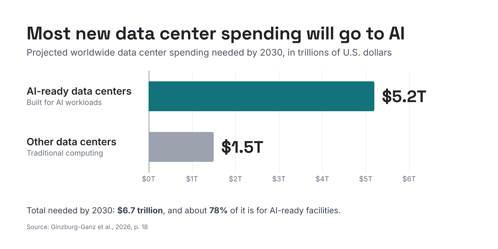

Overview
AI data centers use huge amounts of electricity, give off a lot of heat, and use water to cool down. Each of these can affect the people who live nearby, whether or not they use AI themselves.
The three main effects
Electricity
Your power grid and bills
Data centers run 24/7, so when wind and solar aren't available they draw power from fossil fuel plants (Ginzburg-Ganz et al., 2026, p. 20). This extra load can stress the local grid and increase use of existing power plants (Knittel et al., 2025, p. 1), which can mean higher costs for everyone connected to it.
Heat
Warmer neighborhoods
Data centers produce large amounts of heat that has to go somewhere. Researchers found they can worsen heat exposure in neighborhoods already affected by the urban heat island effect (Yale School of the Environment, 2026). For residents, that can mean hotter summers and higher cooling costs at home.
Water
Local water supply
Many AI data centers use water to cool their high-density server racks (Ginzburg-Ganz et al., 2026, p. 20). The more water a facility uses, the more pressure it puts on the supply that homes, farms, and the environment depend on. These concerns are immediate and local (Yale School of the Environment, 2026).
What this means for you
Even if you never use AI, a nearby data center can affect your daily life: your electric bill, how hot your neighborhood gets in summer, and how much water is available for your home. That's why residents should understand these effects before a new facility is approved.

Emissions
Because extra demand can increase the use of existing fossil-fuel power plants, a new data center may also increase carbon emissions (Knittel et al., 2025, p. 1).